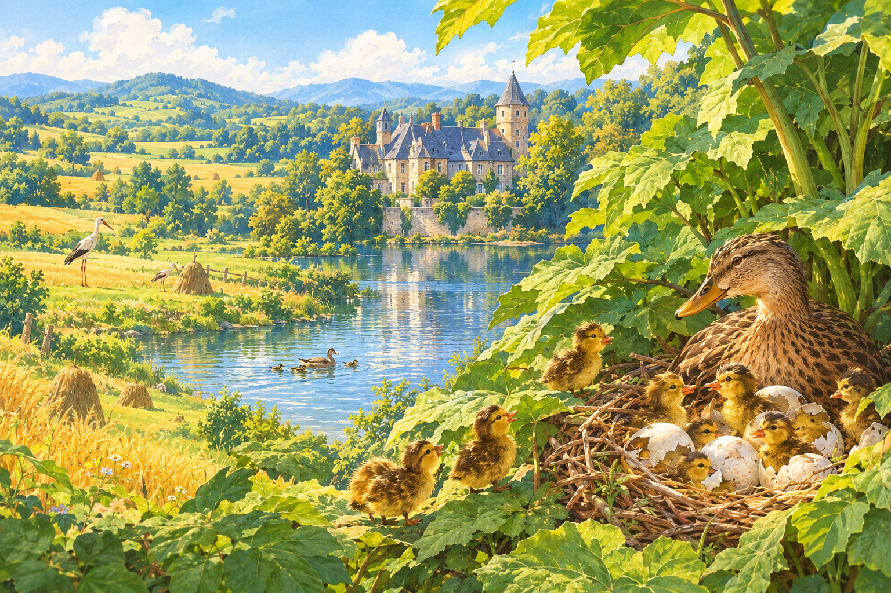

시골에서는 밖이 무척 아름답다. 여름이었다. 밀밭은 황금빛으로, 귀리는 초록빛으로 물들고 아래 푸른 초원에는 건초더미가 쌓였다. 붉은 다리 황새가 종종 돌아다니며 어미 황새한테 배운 이집트 말로 꽥꽥거렸다. 들판과 초원 주위로 너른 숲이 우거지고 한가운데에는 깊은 호수가 여러 개 있었다. 그렇다, 정말이지 시골의 야외 풍경은 아름답다.
따사로운 햇살 속에, 오래된 영주의 저택이 호수에 둘러싸여 있다. 영주의 오른쪽 성벽에서 호수 쪽으로 커다란 우엉 잎이 자라는데 어떤 것들은 꽤나 높아서 어린아이들은 커다란 가지 맨 위에 올라가 설 수도 있었다. 숲 자체만큼이나 빽빽한 이 어지러운 나뭇잎 속에 오리 한 마리가 둥지를 틀고 앉아 새끼 오리를 낳고 있다. 어미는 아무래도 점점 지쳐가고 있다. 앉아 있는 게 엄청나게 지루한 일이고 혹시라도 들키면 안 되기 때문이다. 오리들은 이 우엉 잎 아래를 뒤뚱거리며 수다를 떠는 것보다 호수에서 헤엄치는 게 더 좋았다.
마침내 알이 하나씩 하나씩 갈라지기 시작했다.
“빽, 빽!” 어린 것들이 깨어나 울어대며 고개를 내밀었다.
“꽥, 꽥!” 어미 오리가 서둘러 말했다. 새끼들은 모두 종종거리며 나와서 우엉 잎 아래 초록 세상을 보았다. 엄마는 실컷 보게 해주었다. 초록색은 눈에 좋기 때문이다.
“세상 참 넓다.” 아기 오리들이 모두 말했다. 알 속보다 지금 확실히 더 넓은 곳에 있었다.
엄마가 아기들에게 물었다. “여기가 세상의 전부라고 생각하니? 저런, 세상은 계속해서 뻗어 나간단다. 마당 저쪽으로, 그리고 목사의 들판까지. 난 다 보지도 못했어. 모두 다 알에서 나왔지?” 어미가 자리에서 일어나며 말했다. “아니, 아직 아니네. 제일 큰 알이 아직 남아 있구나. 얼마나 걸리려나? 난 정말이지 몹시 피곤한데.” 어미는 다시 둥지에 앉았다.